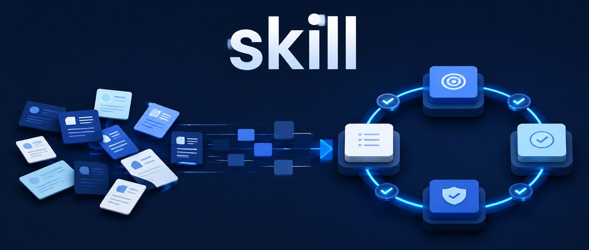

PRD 工程师
把 PRD 转成分阶段开发、测试、验收并可运行的应用。
GitHub ↗MUZI-LYY / pi-prd-engineer
这些不是一次性的 Demo，而是我围绕产品工作持续搭建、使用和迭代的工具与系统。
写作帮助我理清判断，也把实践中真正有价值的部分分享给更多人。
让 AI 从“重新生成”走向检索、重组和预检，把历史模板变成能持续复用的设计资产。
从回答风险走向行动风险，用任务、权限、确认、观察和恢复约束 Agent 的每一步行动。
从知识边界、证据验证到成果溯源，拆解 AI 知识产品如何建立一条完整的信任链。

从任务边界、人机分工、验收与迭代出发，把一次性 Prompt 设计成可重复交付的 Skill。
我是 MUZI-LI，从 UI / UE 设计走到产品经理，现在专注于 AI 产品创新与落地。我习惯从真实问题出发，把模糊需求梳理成清晰判断，再推进为可验证、可使用的产品。
做过 UI / UE 设计，让我对体验与细节保持敏感；产品经历训练我在用户价值、业务目标与实现成本之间做取舍。现在，我也用 Vibe Coding 快速搭建原型和小产品，让判断更早接受真实反馈。
点击或按任意键跳过